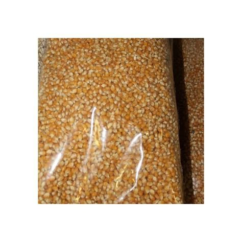
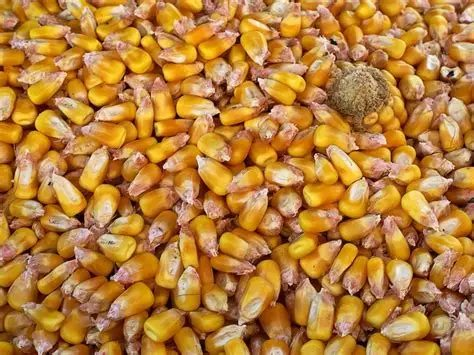
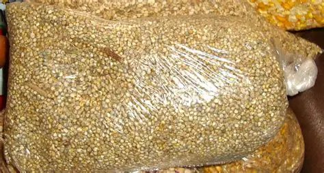
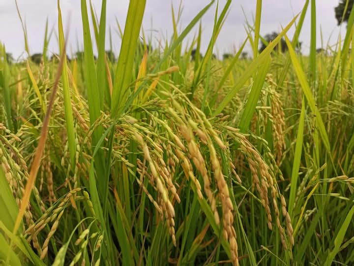
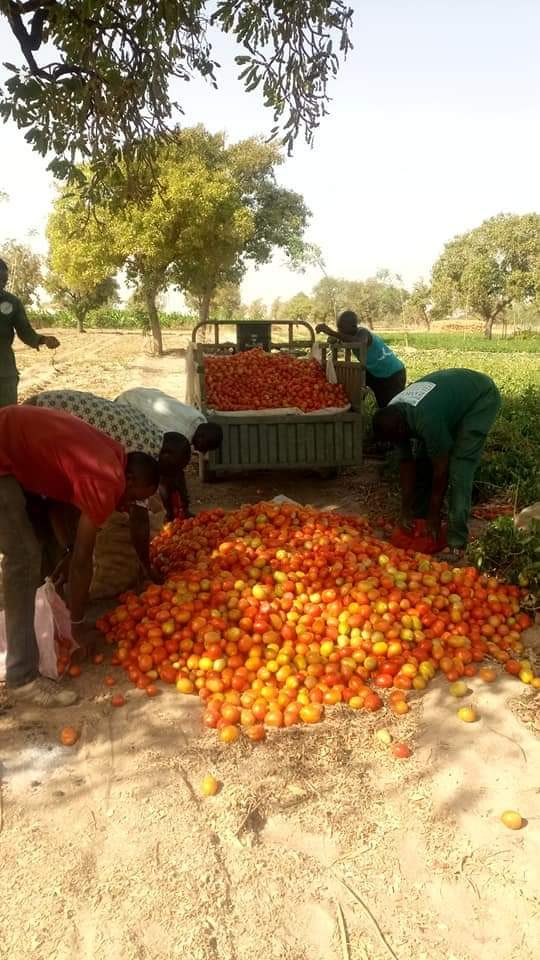

Production & certification de semences
Des semences de haute qualité génétique pour des rendements optimisés
Notre savoir-faire semencier
ZAMOHO produit et certifie des semences de base et de première reproduction (R1) pour les principales céréales et légumineuses. Nos équipes assurent le suivi des parcelles, le traitement post-récolte, le conditionnement et l'obtention de la certification officielle.


Catalogue des semences certifiées

Maïs Sotubaka
Rendement élevé, résistant à la sécheresse. Cycle de 85 jours. Idéal pour les zones soudaniennes.

Maïs Soden
Très productif, bon comportement en post-floraison. Recommandé pour la zone cotonnière.

Maïs Tcheba
Gros potentiel grain, tolérant aux maladies foliaires. Cycle de 110 jours.

Sorgho Toroniou
Très bon rendement, grains blancs, résistant au charbon et au mildiou.

Mil Toroniou
Cycle court, excellente adaptation aux sols pauvres et aux faibles pluies.

Niébé Tiligré
Fixateur d'azote, résistant à la sécheresse, grains blancs appréciés.

Riz
Variétés adaptées aux bas-fonds, pour la riziculture irriguée et de bas-fond.

Cultures maraîchères
Des semences maraîchères (tomate et autres légumes) sont aussi disponibles à la boutique ZAMOHO.